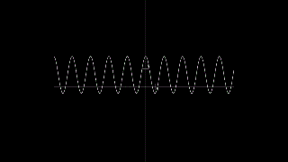

Este curso tiene el propósito de introducir el cálculo tensorial de manera completamente formal y rigurosa, empezando desde los axiomas de los números reales, secuencias, límites y finalmente la derivada.
Temario
Introducción
- Espacios vectoriales. Homomorfismos y transformaciones lineales
- Topología. Conceptos básicos y espacios topológicos
- Vectores. Producto interno y representaciones en sistemas de coordenadas
- Notación indicial. Notación de Einstein
- Vectores covariantes y contravariantes
Álgebra Tensorial
- Operaciones con tensores
- Producto tensorial
- Propiedades de los tensores: representación, transposición, simetría
- Tensor identidad, tensor de Levi-Civita
- Transformación de componentes de un tensor
Geometría Diferencial
- Curvas
- Superficies
- Variedades
- Espacio tangente
- Formas diferenciales y espacio cotangente
- Definición formal de un tensor
- Conexiones
- Derivada covariante
- Teorema fundamental de la geometría de Riemann
- Geodésicas y transporte paralelo
Teoría de Campos
- Simetrías
- Teorema de Noether
- Electromagnetismo en notación tensorial
- Teoría general de la relatividad
Bibliografía:
- Courant, R., John, F., Introducción al Cálculo y al Análisis. México: Editorial Limusa, 1974..
- Spivak, M., Cálculo Infinitesimal (2a ed). México: Reverté, 1998.
Tareas y Exámenes
No conservo tareas y exámenes de esta clase
Notes
He escrito algunas notas desorganizadas basadas en algunos libros de Análisis. Algunos de los temas de este curso están incluidos en las notas.
Notas de Análisis
Calificación Final: 10
Algunas Explicaciones:

Secuencias y Convergencia

Derivada

Función de Weierstrass

Otros tipos de círculos y normas